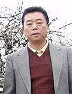
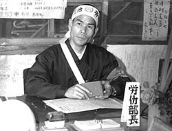
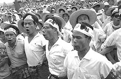

三池炭鉱 - よみがえる父の記憶 -
（2006年4月1日 滋賀県彦根市において聞き取り）

かつて三池労組宮浦支部労働部長（昭和33年6月〜38年6月）だった竹村季敏さんは昭和元年生まれ。昭和23年5月15日
三井鉱山三池鉱業所に入社。大牟田市にあった野添社宅をあてがわれた。
しかし、昭和40年11月30日、三池闘争関連被処分者の１人として「宮浦抗議行動」を理由に解雇。同様の理由で宮浦支部
の仲間8名も昭和44年7月解雇された。
このとき竹村季敏さんは大阪へ移り住むことを決意。しかし、当時の組合幹部から「数年したら大牟田に大病院が出来
るからその事務局長として入ってもらうつもりでいる。」と言われて大阪行きを取りやめた。その間、アルバイトをしなが
ら、その時が来るのを待った。だが、すでに事務局長のポストは他の者に渡っていた。「この時、父はたぶん、組合にだま
されたという思いだったと思う。しかし、父が亡くなった今、そのことをたしかめようもない。」と息子さんは語る。
そういうこともあってか、解雇を不当として三井鉱山を相手に起こしていた裁判を取り下げ、大阪へ出て行くことを再度
決意。昭和44年の頃だった。

その大阪行きの前夜、大牟田警察署の警官が竹村季敏さん宅を訪ねてきた。「昭和44年6月の宮浦鉱長室座り込み事件の
ことだ」と言って警察への同行を求めた。「明日、俺は大阪へ発つ。大牟田にはもう帰ってこないつもりでいる。裁判も取
り下げた。」旨、告げたところ、「それは本当か」と何度も訊ねてそのまま警官達は引き揚げて行ったいう。
大阪へ移り住んで間もなく、三井鉱山関係者が訪ねてきた。「裁判を取り下げてくれたお礼」と言って、札束を目の前に
積み、「三井関連会社が大阪にもあるから役員として就職斡旋をさせてもらう」と申し出てきた。そういう会話が聞くとも
なしにフスマ越しに聞こえてきた、と息子さんは語る。「父は、そんなつもりで裁判を取り下げたのではない、と言って断
っていました。そのとき初めて父を誇らしげに思った。」という。
大阪の移住先にまで三井関係者がつきまとってくるわずらわしさと、三池労組に裏切られたという失意の中で、今後一切
組合活動はしないと竹村季敏さんは家族に誓った。
しかし、再就職先の総評系労働組合に「三池闘争の経験をここで活かしてほしい」と何度も頼まれ、竹村季敏さんは組合
活動にまた専従する。その会社は、ＣＯ中毒重症患者であった宮嶋さんの妹さんも在職していたという会社だった。炭鉱離
職者を多く採用していたのだろう。
そんな竹村季敏さんも、大阪へ移り住んだ6年後に病死。享年50歳だった。

これらの話を語ってくれた竹村季敏さんの息子さんは昭和29年生まれ。現在奈良県に住んでいる。両親に連れられて大阪
へ旅立つ時は中学生だった。国鉄大牟田駅には、組合や社宅の仲間、中学校の友人ら200人ぐらいが「竹村さん、バンザイ
！！」と言って見送ってくれた。
しかし、見知らぬ大阪では言葉の壁があった。何を言っているのかわからない関西弁。また逆に、何をしゃべっているの
かわからない九州弁。そんなことでからかわれることも多々あり、竹村さんは間もなく不登校になる。いっとき、グレかけ
た時もあり、家出をしたこともあったという。その時、大阪駅まで行く切符代に5円足りなかった。なんとか5円マケてくれ
と駅員に何度も頼み込んだ。「まともな切符代もないのに何しに大阪へ行くんや」と駅員は言った。だが最後は5円をマケて
くれたという。その5円はおそらく、駅員のポケットマネーだったに違いない。そのことを考えるとき、その時代、ある意味
ではまだいい時代だったのだろう、と竹村さんはいま思う。
そんな竹村さんの少年時代であったが、現在はある会社の取締役として活躍されている。
父親が結局最後まで帰ることがなかった大牟田を、竹村さんは奥さんと一緒に数年前、大牟田を発ってから初めて訪ねた。
そのとき、自分が生まれ育った野添社宅跡が荒地と化している様子や、すっかり様変わりした学校や町並みを見て、がく
然としたという。このとき「これでもう納得したか」と奥さんに言われた。竹村さんは「これが見納め。もうここへ戻って
くることはないだろう」と答えた。
「しかしきょう、44年ぶりにこうして同じ野添社宅出身の知り合いとめぐり逢えたことは何とも言い難く、忘れかけてい
た炭鉱社宅への想いが一度に噴き出てきた。またいつの日か、帰りたい。」と、竹村さんは涙ぐむ。
竹村季敏さんのお墓は京都市東山区の大谷墓地(西大谷) にある。同じく三池出身の私の両親もここに眠る。奇しくも、
竹村さんらとお会いした4月1日は私の母の命日。そんな母が竹村さんらと引き合わせてくれたのだろうかと私は思う。
炭鉱が閉山して、我々が生活していた町が無くなっても、我々の象徴であった万田山や四ッ山が今も存在しているように、
我々の心の中のヤマの灯は、いつまでも消えることはない。
BACK
|